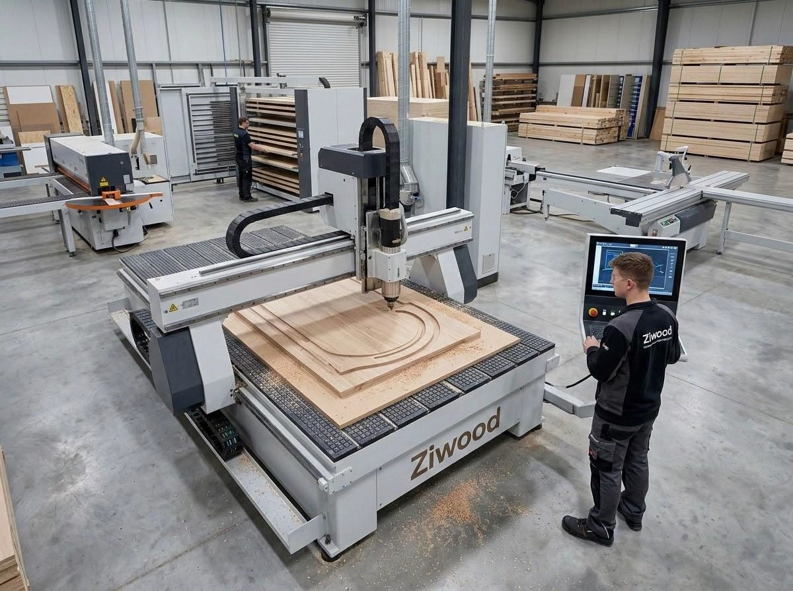
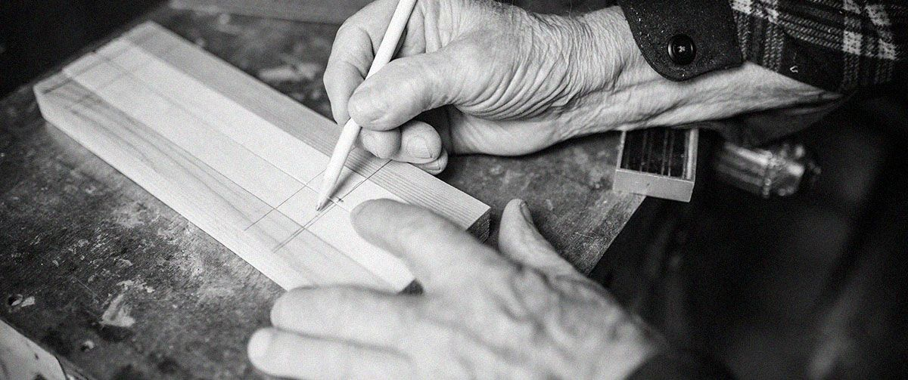
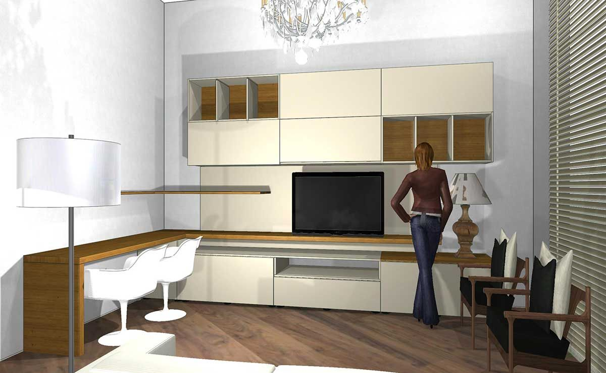
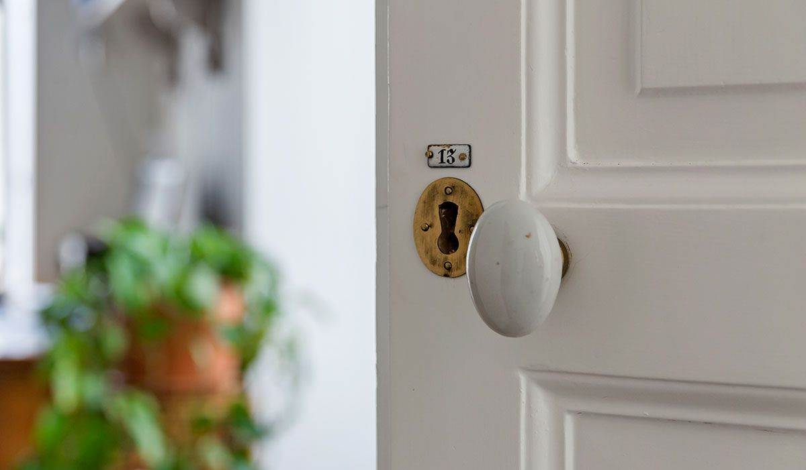

L'azienda
Sessant'anni di legno, una nuova generazione.
Da bottega familiare nata nel 1968 a partner strutturato per architetti, progettisti e imprese. Stessa cura, nuovi strumenti.

La storia
Una falegnameria di famiglia, risorta dalle ceneri.
ZiWood nasce nel 1968 come falegnameria artigiana specializzata nell'arredo su misura. Da allora ha accresciuto competenza ed esperienza nel mondo del legno, garantendo ai clienti il completo supporto per ogni progetto.
Nel cuore della Valle d'Itria, a Martina Franca, l'azienda rappresenta oggi il progetto di Domenico Zigrino, tornato alle origini dopo una parentesi lontana con il desiderio di ridare senso, dignità e bellezza al mestiere artigiano. Una storia personale prima ancora che professionale, intrecciata con quella di una bottega rinata, oggi sempre più punto di riferimento per chi progetta.
Il fondatore
Un interlocutore solido, dinamico e profondamente umano.
Architetti e progettisti che lavorano con ZiWood trovano un partner che parla la loro lingua: capisce il disegno, anticipa i problemi tecnici e si prende la responsabilità del risultato, dal primo sopralluogo alla posa in opera.
Cinque anni di nuova gestione hanno portato innovazione tecnologica e manageriale, senza perdere ciò che rende un arredo su misura davvero tale: l'attenzione a ogni dettaglio.
Domenico Zigrino CEO & Founder
di tradizione artigianale alle spalle.
una nuova generazione, innovazione tecnologica e manageriale.
organizzata per la massima efficienza.
l'imminente ampliamento per commesse sempre più importanti.
Innovazione, efficienza e responsabilità
Tecnologia al servizio della mano.
In ZiWood tecnologia e competenza produttiva si integrano per rendere ogni processo più efficiente, preciso e controllato. L'impiego di tecnologie avanzate e processi ottimizzati consente di migliorare le prestazioni produttive, ridurre gli sprechi e valorizzare al meglio materiali e risorse.
L'attenzione alla sostenibilità e alla sicurezza accompagna ogni fase del lavoro, con l'obiettivo di contenere l'impatto ambientale e garantire condizioni operative sempre più organizzate e affidabili. Un approccio orientato al miglioramento continuo, che trasforma l'innovazione in un valore concreto per il cliente.

Showroom e progettazione
Toccare i materiali, vedere il progetto prima che esista.
Nel nostro showroom una materioteca raccoglie essenze, laccati e finiture da toccare con mano, e una sala multimediale permette di esplorare il progetto in 3D prima di produrre un solo pezzo.
Il team di progettazione interno accompagna ogni cliente — privato o professionista — nel definire insieme ogni passaggio, in maniera esclusiva e "su misura".
Come lavoriamo
La missione
Innovazione, qualità e tradizione.
La tradizione rappresenta la nostra storicità a braccetto con l'innovazione, la ricerca e lo sviluppo di nuovi trend, materiali, finiture e lavorazioni.
Antichi saperi uniti a processi d'avanguardia e macchinari innovativi, con uno sguardo sempre rivolto all'evoluzione dei materiali e al rispetto dell'ambiente: vernici ad acqua, riduzione degli sprechi, sicurezza in laboratorio.
Costruiamo insieme
Il tuo prossimo progetto comincia da un incontro.
Siamo a disposizione per conoscere le vostre esigenze, approfondire le possibilità di collaborazione e presentarvi il portfolio completo, inclusa la rivista Case d'Autore.
Contattaci